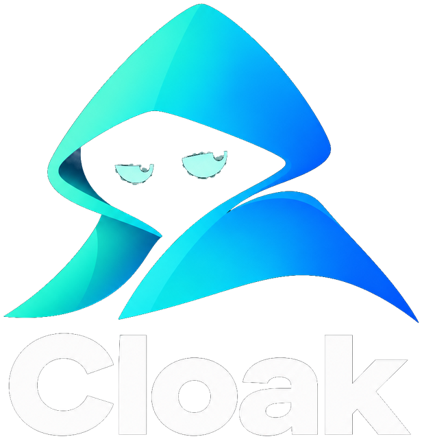
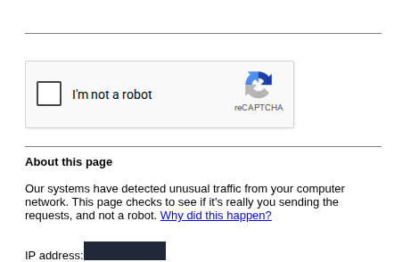

Your agent's browser keeps getting bot‑walled. Bring it home.
Cloakroom runs a stealth Chromium in Docker on a computer you keep at home. Your agent drives it over CDP, so it browses from your home connection, with a real fingerprint and one profile that stays signed in. It's not a fresh headless browser in a data center.
Install Cloakroom from https://github.com/jonclegg/cloakroom

Agents browse from data centers, and big sites can tell.
Datacenter address
Cloud agents run on AWS, GCP and friends. Bot-management vendors know those ranges, so you get a challenge before you get a page.
Automated browser
Headless or instrumented Chromium leaks signals (navigator flags, rendering quirks, CDP artifacts) that Akamai, DataDome and friends score.
Every session starts cold
No cookies, no history, no login. Yesterday's sign-in is gone, so every run looks like a brand-new visitor at the door.
On September 26, 2026, a cloud agent browser was challenged or blocked on twelve big homepages: Home Depot, Ticketmaster, Sam's Club and others. Cloakroom loaded all twelve. These were homepages only; a homepage is not a checkout, and no site is guaranteed.
A computer that stays at home and stays on.
The whole trick is that the browser runs on your machine, on your internet connection. A VPS defeats the point. Any of these works:
⌘A Mac that stays home
A Mac mini, an old MacBook, or a laptop you leave plugged in at home. Cloakroom uses OrbStack (installed for you on macOS 14+, once you say yes), or the Docker Desktop or Colima you already run. Apple Silicon and Intel. On a Mac the browser presents as a Mac, with your Mac's own fonts.
$_A Linux box
A mini PC, home server or spare desktop, amd64 or arm64. If Docker Engine isn't there, the installer offers to install it with Docker's official script, and you don't have to log out and back in.
⊞Windows, if you must
Docker Desktop with Linux containers (WSL 2). If it's missing, the installer offers to install it with winget.
127.0.0.1. So the agent that drives it (Grok Bot, Muse, Claude Code, Codex, Cursor) runs on the home computer, and you keep talking to the agent from your phone as usual. Keep the machine awake (on a plugged-in Mac, caffeinate -s does it). The first start downloads about 1 GB.A Docker container, a stealth Chromium, and a port on localhost.
You, on your phone
You ask your agent for something: "order my groceries from Walmart."
cloakroom share gives you a private link to the live viewer, so you can sign in or finish a puzzle from your phone.
your agentviewer link
(HTTPS tunnel)
Agent + Cloakroom
The agent runs here and connects with plain Playwright or Puppeteer:
- Chromium with Fury's patches: fingerprint patches in C++, built for Linux, run headed on Xvfb, served over CDP on
127.0.0.1:9222 - Chat API on
127.0.0.1:8423:cloakroom chat "…"and Cloakroom drives the browser with DeepSeek, working bot checks as it goes - Persistent profile in a Docker volume: cookies and logins survive restarts
- noVNC viewer on
127.0.0.1:6080for watching and taking over
connectionresidential IP
Sites see a person at home
A residential IP, a consistent browser fingerprint, and a profile with history and a signed-in session. That's what a regular customer looks like.
Drive it with the tools you already use
There's no SDK: anything that speaks the Chrome DevTools Protocol can connect. pip install playwright is enough; you don't need playwright install, because the browser is already running in the container.
Closing the connection just disconnects. The browser and its profile keep running until cloakroom stop.
from playwright.sync_api import sync_playwright with sync_playwright() as pw: browser = pw.chromium.connect_over_cdp("http://127.0.0.1:9222") ctx = browser.contexts[0] # the saved profile page = ctx.new_page() page.goto("https://example.com") print(page.title()) browser.close() # disconnect only
Bing first
Agents open sites from a Bing organic result instead of a direct goto or a Google search, which tends to hit /sorry/. examples/bing_first.py does it.
Humanized, and real
Curved mouse paths with jitter and typing at 55–150 ms per key, delivered as real OS-level mouse and keyboard events, not CDP's synthetic ones. The site's own search box, not a hot search URL.
Worked, not avoided
Press-and-hold, sliders and Cloudflare checks are worked by Cloakroom's own agent. Passwords stay yours, typed in the viewer; the agent never asks for one in chat, and it handles 2FA codes itself.


/sorry/ page.

Port 9222 is full control of a signed-in browser. Treat it that way.
Nothing listens on your network
Docker publishes CDP (9222) and the viewer (6080) on 127.0.0.1 only. Cloakroom never tunnels, forwards or Funnels the CDP port, and the docs tell agents never to.
cloakroom share exposes the viewer, not CDP
It opens a Cloudflare quick tunnel to the console and gives you an HTTPS link. The console asks for the password you chose at setup, and remembers a device for 30 days. cloakroom unshare closes it.
One sentence to your agent, then a few commands.
Your agent follows the install steps in the repo. It finds or, with your OK, installs a container engine (OrbStack, Docker Engine or Docker Desktop), pulls Cloakroom's image, and starts the browser. Then it opens a page on your computer for your OpenRouter key, and runs a smoke test that shows you a screenshot of each site it reached.
Install Cloakroom from https://github.com/jonclegg/cloakroom
Or run the installer yourself:
# macOS or Linux curl -fsSL https://raw.githubusercontent.com/jonclegg/cloakroom/main/install.sh | sh # Windows (PowerShell) irm https://raw.githubusercontent.com/jonclegg/cloakroom/main/install.ps1 | iex
Every command takes --json, so agents can read the state instead of scraping text. The full agent reference lives in the Cloakroom skill.
cloakroom chat "…" | Give Cloakroom a goal; it drives the browser and replies. |
cloakroom key | Open the page where you paste your OpenRouter key. |
cloakroom smoke | Visit a few big sites and show a screenshot of each. |
cloakroom start | Pull the image, start the container, wait until it's ready. |
cloakroom status | Is it ready, is the key set, plus the viewer, CDP and share URLs. |
cloakroom share | Private HTTPS link to the viewer for your phone. |
cloakroom unshare | Close the share link. |
cloakroom stop | Stop the container. The profile and its logins are kept. |
Questions you're about to ask
Does it solve CAPTCHAs?
It tries not to trigger them in the first place: a home IP, a stealth fingerprint, a warm profile, and human-paced input. When a check does show up, Cloakroom's own agent works it the way a person would: press-and-hold, a slider, a checkbox. It doesn't call solving services. Anything it can't clear, you can finish in the viewer.
Will it get past every bot wall?
No guarantees. Some sites will still block you. A flagged home IP, a VPN or a datacenter proxy can all still get you challenged. Loading a homepage is not the same as completing a login or a checkout.
Why not just use a residential proxy with a cloud browser?
That fixes the IP but not the fingerprint or the empty profile, and you're renting someone else's "residential" address. Cloakroom keeps all three together on hardware you own. If you want a proxy anyway, set CLOAKROOM_PROXY in .env. Some agents can already route traffic through your own computer, which clears plenty of IP-only blocks; Cloakroom is for the sites that fingerprint the browser too.
Can a cloud agent connect over Tailscale or a tunnel?
Not as a supported setup. CDP on 9222 is full, unauthenticated control of a browser that's signed into your accounts, so Cloakroom keeps it on localhost and the agent guide tells agents not to expose it, Tailscale included. Run the agent on the same computer instead. The only thing that leaves the machine is the viewer, through cloakroom share.
Does it keep me signed in?
Yes. The profile lives in a Docker volume, so cookies and logins survive cloakroom stop, reboots and image updates. Only docker compose down -v deletes it. The browser's fingerprint is kept with the profile too, so sites keep seeing the same device.
How do text-message 2FA codes work?
Your agent handles the code, not Cloakroom. It might read it from Messages or email on your computer and type it in. If it can't, you type it in the viewer. Cloakroom never reads your texts. Because the profile persists, most sites only ask on the first sign-in.
Can I run it on a server instead of at home?
You can, but then you're back on a datacenter IP, which is the problem Cloakroom exists to solve. The point is a machine on your home connection.
Which browser is it, and is this free?
It is Chromium with Fury's fingerprint patches, which change what the browser reports in C++ rather than with injected JavaScript, built for Linux in a fork. Each profile wears a real machine from Fury's catalogue: a Mac on a Mac, a Windows PC elsewhere. Cloakroom adds the headed display, the viewer, the persistent profile, the chat agent, the CLI and the agent guide. Everything is open source and free: Cloakroom's own code is MIT licensed, and Chromium and Fury's patches are BSD-3-Clause. Cloakroom's agent uses DeepSeek through your own OpenRouter key, which costs a few cents a task.
Is this allowed?
Use your own accounts and stay within each site's terms. Cloakroom is meant to let your agent do what you'd do yourself in a browser, like ordering groceries or checking an order. It is not for scraping at scale or getting around a ban. There are no site-specific scripts, by design.
How heavy is it?
One container with a headed Chromium, Xvfb, a VNC server and the chat API. Expect about 1 GB of downloads on first start, which can take up to ten minutes. The container gets 2 GB of shared memory. It restarts automatically unless you stop it.
Give your agent a browser at home.
Tell your agent, and it does the rest.
Install Cloakroom from https://github.com/jonclegg/cloakroom